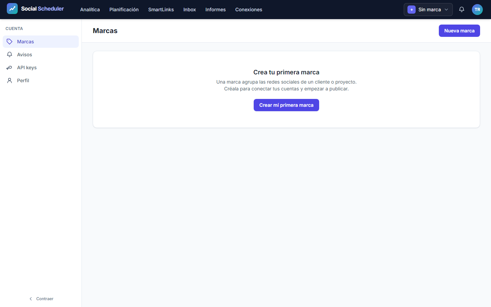
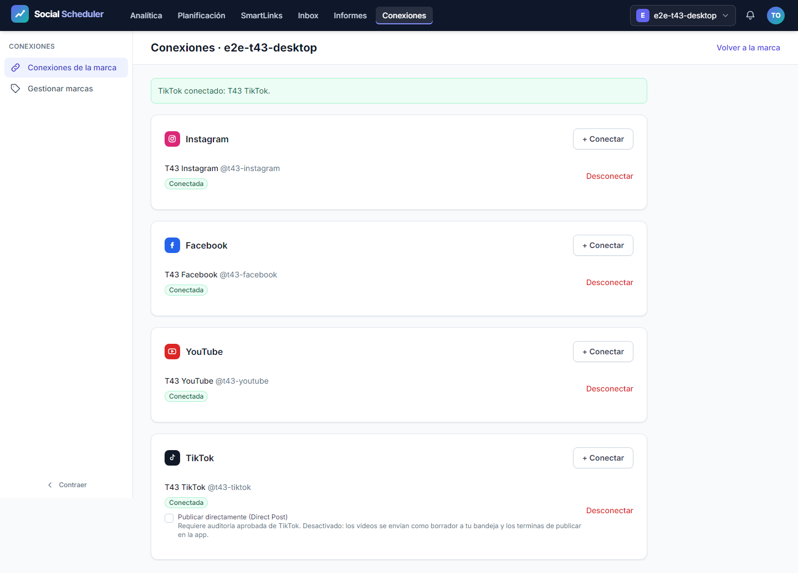
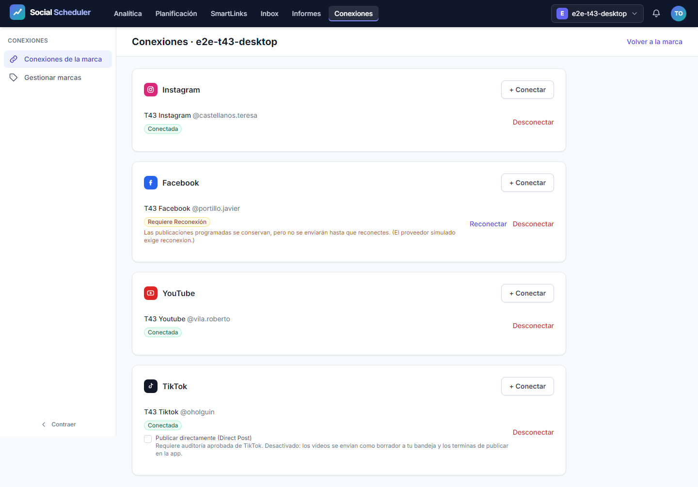
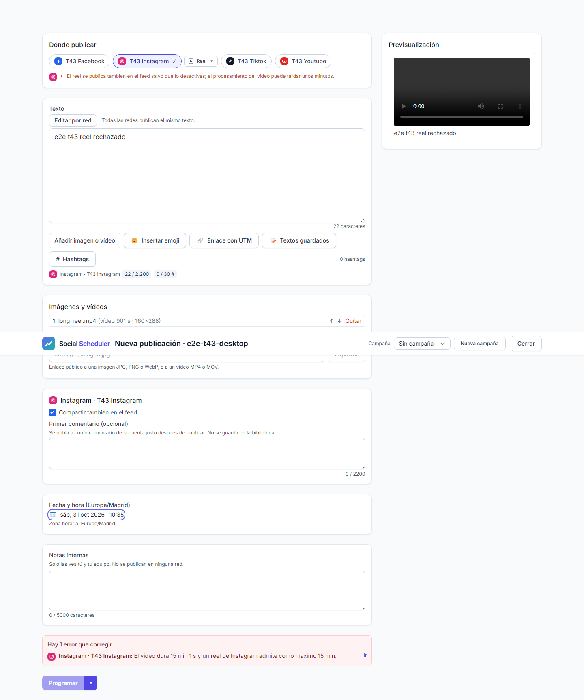
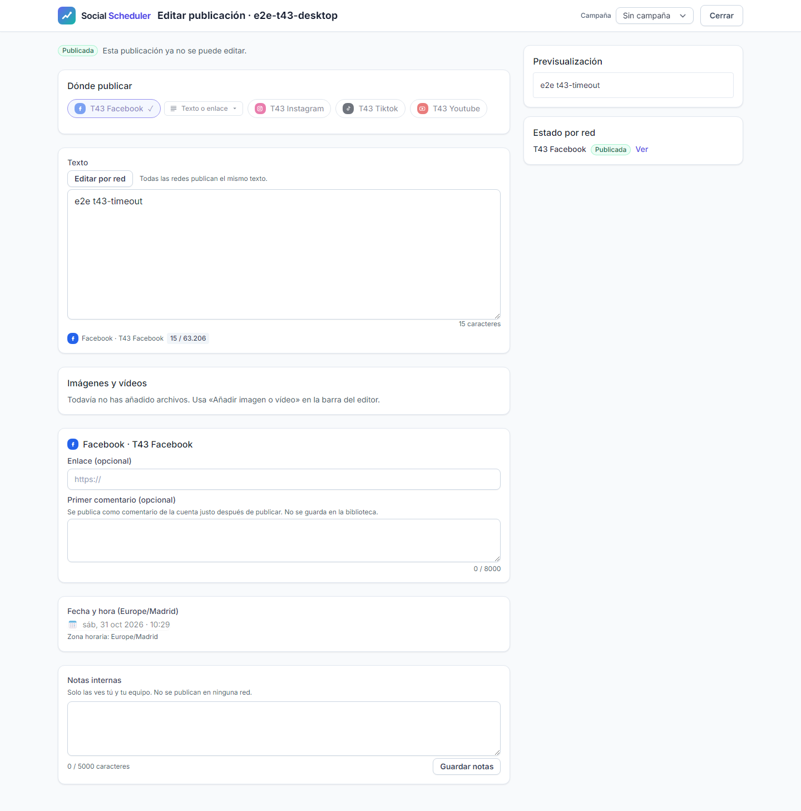
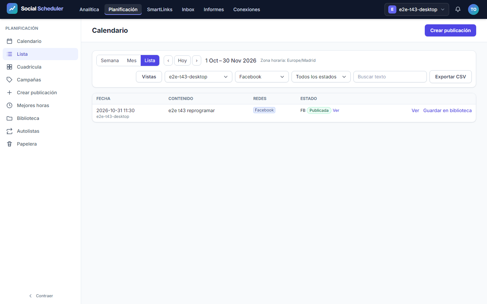
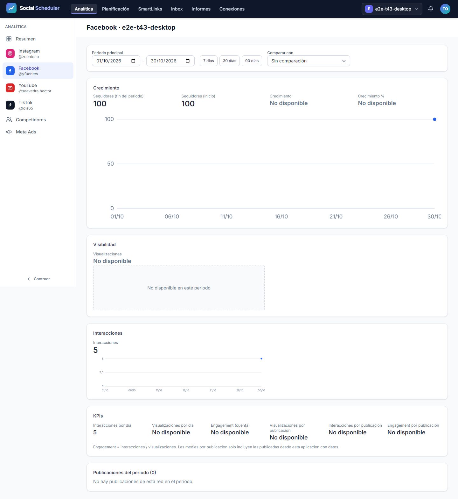
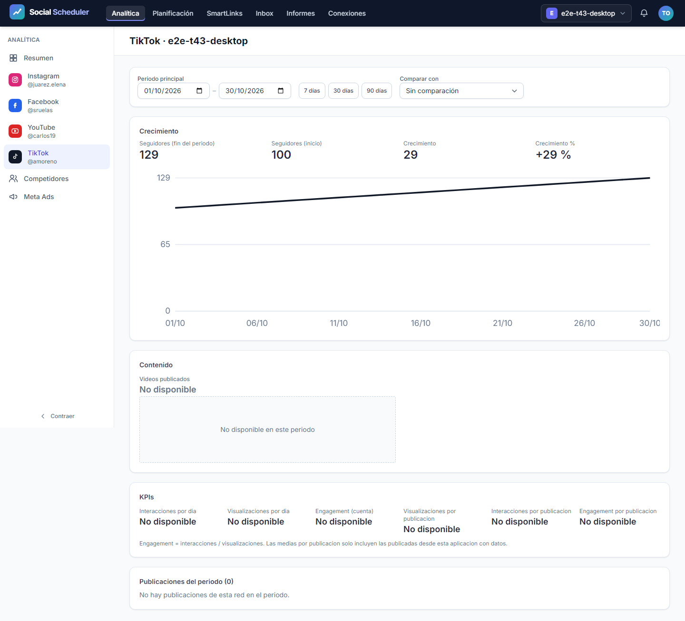
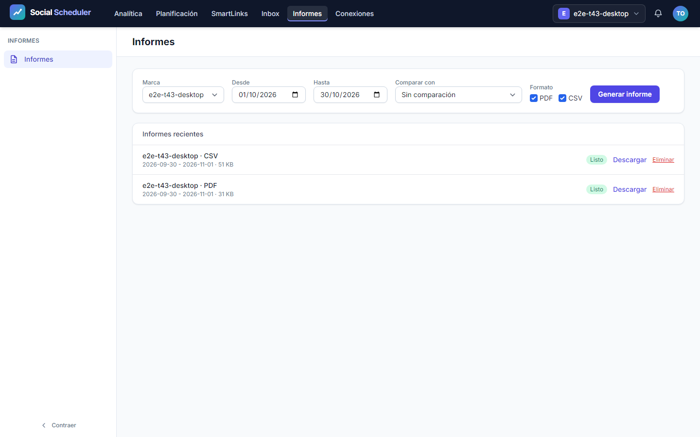
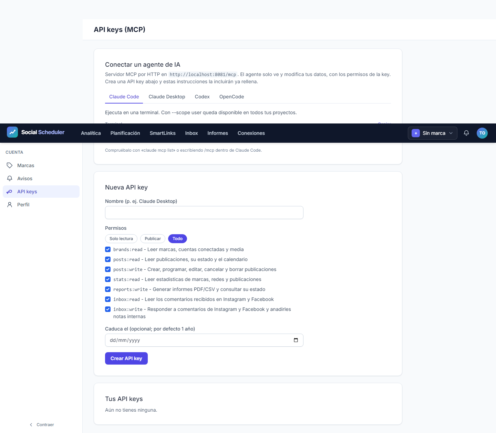

| Campo | Estado |
|---|---|
| Fecha | 2026-10-31 |
| Estado de la parte automática | VERDE, qa-gate.py exit 0: 57 pasan, 0 fallos, 0 flaky, 0 omitidos |
| Estado de la entrega completa | No completada: M-01 a M-04 pendientes |
| URL autorizada | http://localhost:8081, servidor de la configuración aislada T-43 |
| Plan | Plan · Pruebas · Ledger |
Esta auditoría cubre los doce escenarios originales E2E-01 a E2E-12, los tres bloques API y las comprobaciones de seguridad del harness. Los perfiles previstos son desktop, mobile y mobile-360 en Chromium.
El runner específico crea una base SQLite, media, caché, vistas, sesiones y correo bajo un directorio desechable de T-43. Solo utiliza usuarios e2e-sec-roadmap-*; no carga la sesión demo ni los bookends de la batería general. El router y la CLI de pruebas simulan las redes sociales y rechazan HTTP no simulado. Los controladores, servicios, dispatcher, jobs, worker y generadores PDF/CSV son los de la aplicación. Los resultados no acreditan publicaciones ni OAuth en redes reales.
Ejecución independiente completada, sin limitar proyectos y con cero reintentos:
npx playwright test -c playwright.roadmap.config.ts
Inicio del runner: 2026-10-31T09:28:01.054Z. Duración: 249,57 segundos. Resultado terminal del proceso: exit 0, 57 passed. Los perfiles desktop (1440 × 900), mobile (375 × 812) y mobile-360 (360 × 740) ejecutaron 19 casos cada uno: 12 E2E de navegador, 3 API y 4 comprobaciones del harness.
Se ejecutó qa-gate.py raw/results.json sobre la copia exacta del reporter JSON; devolvió exit 0. Salida íntegra:
{
"verdict": "VERDE",
"counts": {
"passed": 57,
"failed": 0,
"flaky": 0,
"skipped": 0,
"interrupted": 0
},
"flaky_sin_justificar": [],
"flaky_justificados": {},
"threshold": "verde ⟺ 0 failed, 0 flaky sin justificar, 0 interrumpidos y ≥1 test ejecutado"
}
La evidencia JSON conserva los 57 resultados y las rutas originales; no es una salida de descubrimiento --list. SHA-256 de origen y copia: ac554df539a373dbca70f3bc5065da457a7d7ac20cb26c740c76545283b95e6a. Metadatos, resumen por caso, salida del gate y huella permiten comprobar la procedencia.
El primer intento dentro del sandbox terminó con exit 1 y spawn EPERM antes de arrancar la batería. Tras comprobar que ese proceso había terminado, se ejecutó la corrida anterior con acceso al host y un directorio nuevo. No hubo reinicios por timeouts de observación ni repeticiones para ocultar fallos; el run válido no tiene errores del runner ni casos flaky.
Ejecutadas el 2026-10-31 con Python 3.13 y el bundle custom-agents 1.21.1:
ledger-lint.py tasks.md: exit 0, 0 incoherencias y 0 avisos.coverage-check.py tasks.md test-plan.md spec.md: exit 0, 0 referencias rotas, ningún escenario huérfano y ningún CA sin referencia literal.36/36 ejecuciones E2E pasan: los doce escenarios se comprobaron en los tres perfiles. La accesibilidad con axe y el desbordamiento horizontal se comprueban en los puntos de cierre definidos por finish(); las capturas de registro, recuperación y acceso denegado documentan además sus estados específicos.
| Escenario | Requisito observable | Tareas | Resultado |
|---|---|---|---|
| E2E-01 | Registro, verificación, panel vacío, login y recuperación de contraseña | T-07 | PASA 3/3 |
| E2E-02 | Dos sesiones: marca ajena inaccesible y ausencia de datos ajenos | T-08 | PASA 3/3 |
| E2E-03 | OAuth local simulado de Instagram, Facebook, YouTube y TikTok; desconexión y credenciales retiradas | T-11 a T-15 | PASA 3/3 |
| E2E-04 | Renovación por job, reconexión tras rechazo y conservación de publicaciones pendientes | T-15, T-16 | PASA 3/3 |
| E2E-05 | Vídeo real fuera del límite de duración de reel: error visible y publicación no guardada | T-18, T-23 | PASA 3/3 |
| E2E-06 | Compositor programa; dispatcher y worker publican con ID y enlace externo simulados | T-17, T-19 a T-23, T-26, T-27 | PASA 3/3 |
| E2E-07 | Error transitorio y timeout tras enviar: reintentos con una sola publicación externa | T-20, T-25 | PASA 3/3 |
| E2E-08 | Filtros del calendario, reprogramación de pendiente y bloqueo de publicada | T-24 | PASA 3/3 |
| E2E-09 | Jobs de snapshots: segunda ejecución idempotente y métricas no disponibles como null | T-31 a T-34, T-36 | PASA 3/3 |
| E2E-10 | Treinta días de histórico: métricas y gráficos, cambio de red/periodo y «no disponible» | T-35, T-37 | PASA 3/3 |
| E2E-11 | Generación por cola y descarga de informes PDF/CSV con datos propios y sin datos ajenos | T-38 a T-40 | PASA 3/3 |
| E2E-12 | API key mostrada una sola vez, revocada en UI y rechazada por MCP | T-28 | PASA 3/3 |
Se conservan 45 capturas (15 por perfil) en screenshots/. Los artefactos originales, incluidos tres PDF y tres CSV descargados, están en raw/artifacts/. E2E-11 comprobó encabezado PDF, tamaño y texto extraído con pdftotext: marca, seguidores, publicaciones destacadas y publicación propia presentes; marcador del otro usuario ausente. El CSV se comprobó igualmente contra los datos propios y el marcador ajeno.
| Bloque | Comprobación | Resultado |
|---|---|---|
| API-01 | initialize, catálogo y flujo de herramientas con key válida |
PASA 3/3 |
| API-02 | Key inválida: 401 sin herramientas ni datos | PASA 3/3 |
| API-03 | Lectura MCP de marca ajena: rechazo sin revelar datos | PASA 3/3 |
Los tres bloques se ejecutaron contra el servidor loopback con usuarios y tokens desechables. El resumen API conserva sus nueve ejecuciones. Se presentan separados de los doce escenarios de navegador; el JSON combinado del runner y el gate incluyen ambos grupos y las comprobaciones del harness.
12/12 comprobaciones pasan: cada perfil ejecutó rechazo de entorno de producción, rechazo de una base fuera del directorio desechable, creación exclusiva de usuarios dedicados y separación de caché/locks entre dos runs.
Las dos lentes de revisión del intento 2 confirmaron la corrección de B1: las rutas de caché y locks se fijan antes de que los providers puedan resolver las instancias compartidas. La documentación se corrigió de tres a cuatro comprobaciones del harness. Esta auditoría se ejecutó después de esas correcciones, sin modificaciones de aplicación o harness durante la corrida.
El JUnit del pase completo, copiado desde storage/framework/testing/t43/phpunit-final.xml, declara 2458 tests, 14489 aserciones, 0 errores, 0 fallos y 0 omitidos. Se ha leído su cabecera; esta auditoría no ha repetido la suite PHP. Su procedencia se distingue de la nueva ejecución independiente de navegador.
Después de esta QA de navegador, el refuerzo literal de Bluesky añade tres pruebas sin modificar producción ni el harness. La nueva regresión completa del orquestador pasa 2461 tests y 14549 aserciones, sin errores, fallos ni omitidos, en 159907 ms. Se conserva por separado su JUnit final; la evidencia anterior no se sobrescribe. Las lentes A y B verificaron esos casos de grafemas, reducción de cuatro imágenes, reconciliación entre dos jobs y comentarios persistidos.
El orquestador comunica además las comprobaciones estáticas del árbol actual: npx tsc --noEmit -p . y php vendor/bin/pint --test terminan con exit 0; Pint devuelve result: passed. Estas comprobaciones pertenecen al orquestador y complementan la nueva ejecución independiente de Playwright.
Aunque la parte automática termine en verde, T-43 permanece abierta mientras no se verifiquen los manuales exigidos. Este informe no cambia el estado del plan ni de la spec.
Cada bloque muestra una captura de escritorio y enlaza las otras dos anchuras. Las imágenes son de usuarios y cuentas simulados dentro del run desechable.

Móvil 375 px · Móvil 360 px
Móvil 375 px · Móvil 360 px
Móvil 375 px · Móvil 360 px
Móvil 375 px · Móvil 360 px
Móvil 375 px · Móvil 360 px
Móvil 375 px · Móvil 360 px
Móvil 375 px · Móvil 360 px
Móvil 375 px · Móvil 360 px
Móvil 375 px · Móvil 360 px
Móvil 375 px · Móvil 360 px| Perfil | CSV | |
|---|---|---|
| desktop | PDF, 31777 bytes | CSV, 52518 bytes |
| mobile | PDF, 31770 bytes | CSV, 52517 bytes |
| mobile-360 | PDF, 31804 bytes | CSV, 52521 bytes |
Manifiesto de tamaños y huellas de los seis informes. Las copias enlazadas tienen el mismo SHA-256 que sus artefactos originales.
Se inspeccionaron visualmente capturas representativas del dashboard en escritorio y del listado de informes a 360 px: contenido legible, gráficos presentes y botones accesibles sin recortes observados. Esta inspección de QA no es la aprobación del usuario exigida por M-03.